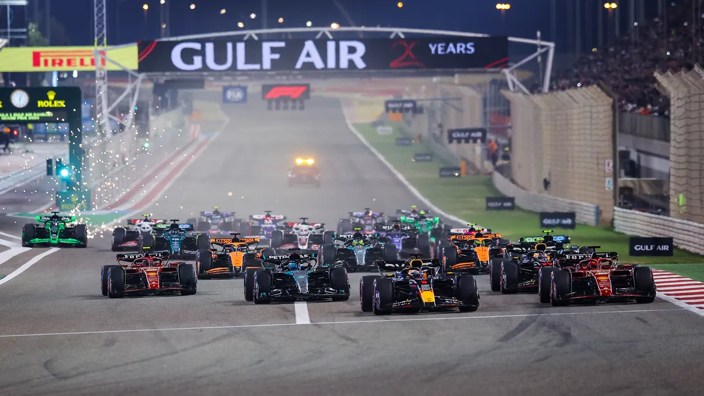

What is Formula1?
Formula 1, often abbreviated as F1, is the pinnacle of motor racing and one of the most prestigious forms of motorsport worldwide. Governed by the Fédération Internationale de l'Automobile (FIA), F1 is a series of high-speed, open-wheel car races that take place on circuits across the globe, including both purpose-built tracks and city streets. Each race, known as a Grand Prix, features cutting-edge vehicles built by world-renowned manufacturers like Ferrari, Mercedes, Red Bull Racing, and McLaren. These cars are designed using the latest in aerodynamics, engineering, and technology, making them some of the fastest and most sophisticated racing machines in the world.
Key Features of Formula 1:
-
Teams and Drivers:
F1 teams field two drivers each season, with 10 teams competing in the championship. The drivers are among the most skilled and daring in motorsport.
-
The World Championship:
The season comprises multiple Grand Prix races held in various countries, and points are awarded based on race finishes. The titles of Drivers' Champion and Constructors' Champion are awarded at the end of the season to the best-performing driver and team, respectively.
-
Technology:
F1 is a hub of innovation, with teams investing heavily in research and development. Technologies pioneered in F1 often influence the automotive industry.
-
Global Appeal:
Races are broadcast worldwide, with millions of fans following the action, making F1 one of the most-watched sports globally.

Standings
| 1. Max Verstappen 403 pts |
2. Lando Norris 340 pts |
|
| 3. Charles Leclerc 319 pts |
4. Oscar Piastri 268 pts |
5. Carlos Sainz 259 pts |
| 6. George Russell 217 pts |
7. Lewis Hamilton 208 pts |
8. Sergio Perez 152 pts |
| 9. Fernando Alonso 62 pts |
10. Nico Hulkenberg 35pts |
11. Yuki Tsunoda 30 pts |
| 12. Pierre Gasly 26 pts |
13. Lance Stroll 24 pts |
14. Esteban Ocon 23 pts |
| 15. Kevin Magnussen 14 pts |
16. Alexander Albon 16 pts | 17. Oliver Bearman 7 pts |
| 18. Franco Colapinto 5 pts |
19. Liam Lawson 4 pts |
20./21. Zhou Guanyu / Valtteri Bottas 0 pts |